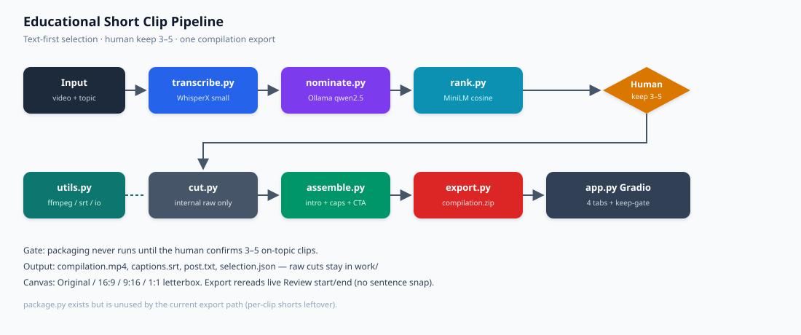
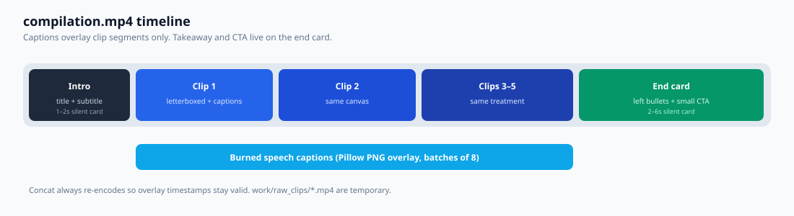

utils.py
Shared I/O
Run folders, JSON/SRT writers, ffmpeg/ffprobe wrappers, even dimensions, font lookup, snap_to_segments, excerpt by time range. Constants: MAX_REVIEW=10, MIN_KEEP=3, MAX_KEEP=5.
pipeline/ documentationHow the Gradio demo turns a long educational video into one compilation: timestamped transcript, Ollama nomination, embedding rank, human keep-gate, then a single assembled export.
The pipeline is text-first. Clips are found from the WhisperX transcript, not by scanning pixels. Models only nominate and rank. A human must keep 3–5 on-topic clips before ffmpeg runs. The shipped artifact is one Demo/YouTube file, not separate raw cuts.

utils.py.Gradio tabs map 1:1 onto this graph: Input → Transcript + candidates → Review → Package + export. Export stays disabled until Confirm selection.
Run folders, JSON/SRT writers, ffmpeg/ffprobe wrappers, even dimensions, font lookup, snap_to_segments, excerpt by time range. Constants: MAX_REVIEW=10, MIN_KEEP=3, MAX_KEEP=5.
Lazy-loads WhisperX small. Aligns words when possible. Writes transcript.json and transcript.srt. Device: CUDA if present, otherwise CPU (MPS is avoided).
ollama.chat(..., format="json") with prompts/nominate_clips.txt. Chunks long transcripts. Snaps times onto real segments. If fewer than 3 clips, sliding-window fallback.
Encodes each candidate against learning objectives with MiniLM. Score = max cosine similarity. Returns Top N for the review tab. Ranking is not the final cut.
cut_clip tries stream-copy, then re-encodes. make_preview always re-encodes for review playback. Raw files stay under work/{run}/raw_clips/.
Intro card → normalized raw clips → takeaway/CTA end card. Caption cues are shifted onto the compilation clock and burned with Pillow overlays (this ffmpeg build has no drawtext / subtitles).
Orchestrates cut + assemble. Writes compilation.mp4, captions.srt, post.txt, selection.json, then zip. Refuses export unless 3–5 clips are kept.
Older per-clip packager (9:16, drawtext title/CTA). Current product path does not call it. Kept as leftover from the first MVP.
| Field | Meaning |
|---|---|
id | Stable id after normalize, c1…cn |
start / end | Seconds on the source video, snapped to transcript sentences |
title / takeaway / quote / reason | LLM (or window fallback) text |
score | Added by rank.py, max cosine vs objectives |
excerpt | Transcript slice covering the range |
Review judges topic fit, standalone completeness, and “one knowledge point”.
A weak opening is not a reject — the user may edit start/end.
Confirm copies kept rows into state["approved"] and unlocks Tab 4.
| Path | When | Exported? |
|---|---|---|
work/{run}/source.* | After upload | No |
work/{run}/transcript.json|.srt | After WhisperX | No |
work/{run}/previews/ | Review cards | No |
work/{run}/raw_clips/ | After confirm/export | No |
work/{run}/assemble/ | Intro, norm clips, overlays | No |
exports/{run}/compilation.mp4 | Final video | Yes |
exports/{run}/captions.srt | Cue list aligned to compilation time | Yes |
exports/{run}/post.txt | Source URL + takeaway + CTA | Yes |

Caption times: compilation_t = intro_duration + sum(previous clips) + (seg.start − clip.start).
The source URL is never burned as a clickable link; it belongs in post.txt / the platform description.
Run from POC/ with Ollama up (qwen2.5 preferred) and ffmpeg on PATH:
python app.py. First WhisperX load is slow. Use a short lecture for demos.